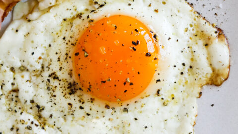

Sunny Side Up Egg Recipe

Description
With golden yolks and tender, just-set whites, classic sunny-side up eggs are just
begging to become the eyes atop the bacon mouth on your breakfast plate. But before they can do that,
they have to be made just right, because uncooked whites and overcooked yolks do not make a happy
breakfast face. Here's how to nail classic, unflipped fried eggs with a runny yolk every time.
Ingredients
- 1 tablespoon (15g) unsalted butter
- 2 Large Eggs
- Kosher salt and freshly ground pepper
Steps
- Heat butter in a cast iron, carbon steel, or nonstick skillet over medium heat until lightly foaming, tilting pan to evenly distribute the melted butter.
- Carefully break eggs into the skillet, season with salt, and cook until the whites are just set on top and the yolks are still runny, about 3 minutes.
- Transfer to a plate, season with pepper if desired, and serve immediately.